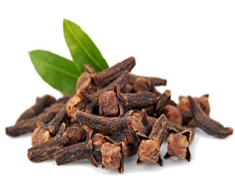
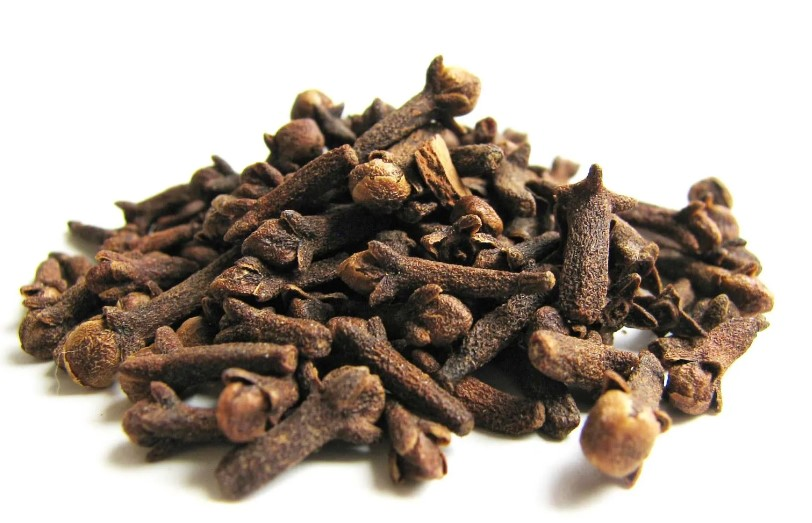

PHOTOS:


Botanical Name: Syzygium aromaticum
Common name: Laung
Clove (Syzygium aromaticum) thrives in tropical climates with high humidity and temperatures between 20-30°C. It grows best in well-drained, loamy soils with ample rainfall. Native to the Spice Islands (Maluku Islands), it is also cultivated in India and other tropical regions. Clove (Syzygium aromaticum) is cultivated from seeds or seedlings in welldrained, rich soils. It requires a tropical climate with high humidity and regular rainfall. Plants are spaced widely, pruned for better yield, and harvested by picking mature flower buds. Clove (Syzygium aromaticum) has anti-inflammatory, analgesic, and antimicrobial properties. It helps alleviate toothaches, digestive issues, respiratory problems, and nausea. Additionally, it can be used to treat infections, reduce inflammation, and enhance overall oral health due to its eugenol content.